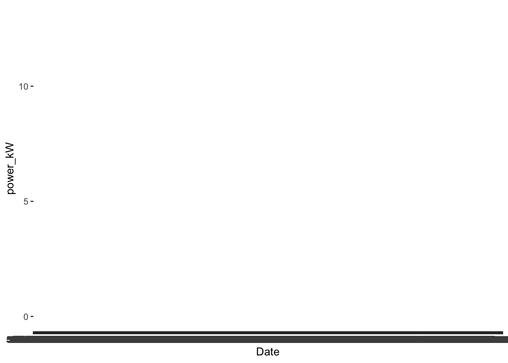
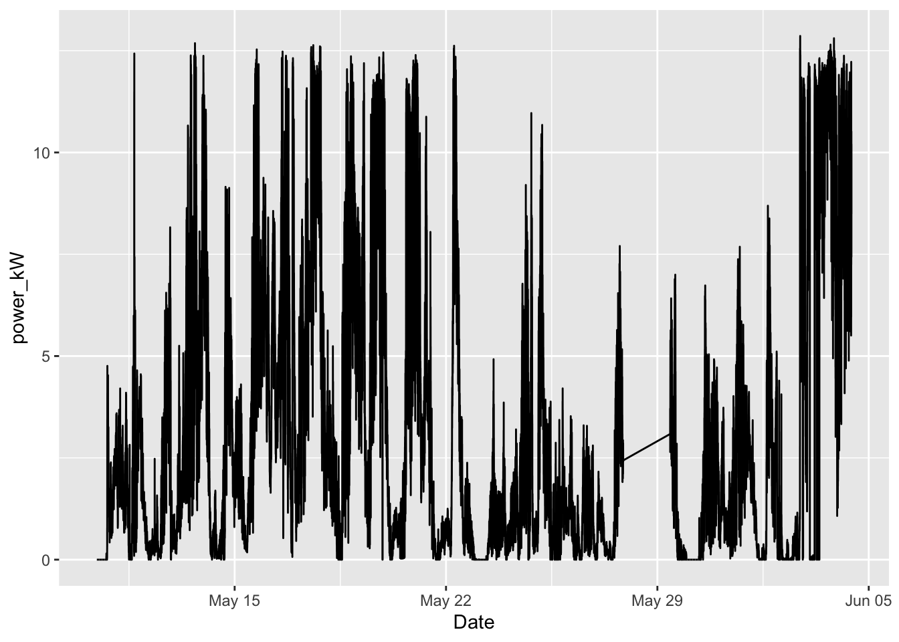
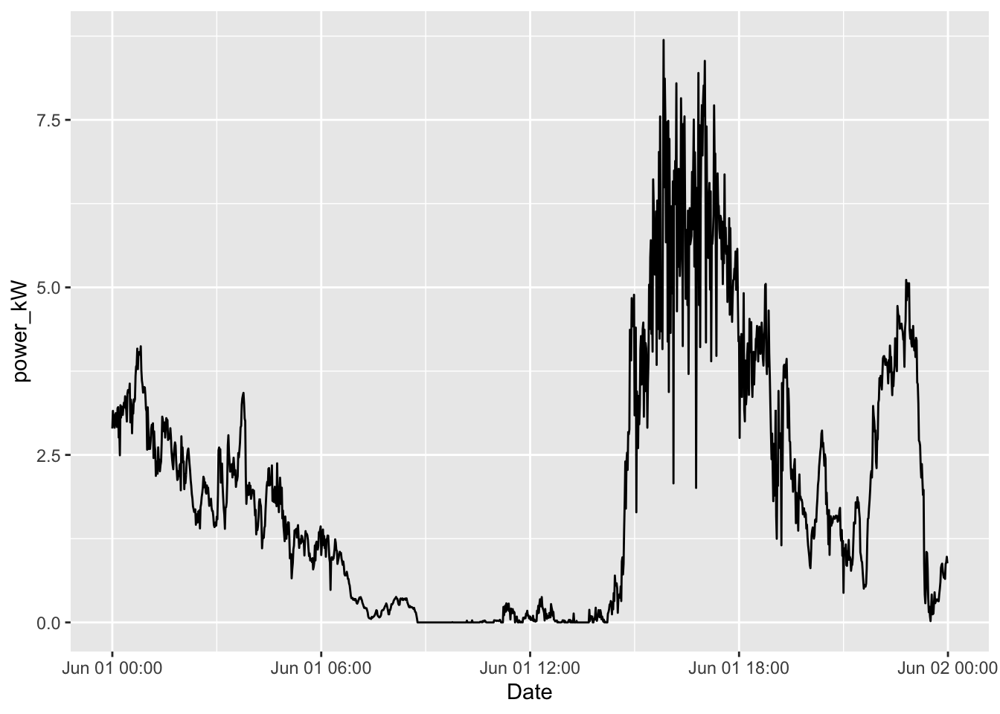

Think of how many different formats you know of to format a date:
2023 07 06
Wed, Jun 7, 2023
07-06-23
06-07-23 14:55 ET
06/07/2023 2:55pm
Yikes!
Date, Time, and Datetime
Date/time data are data that conveys information about, you guessed it, date and/or time! There are three relevant data types when we talk about date/time data:
Date - only has the date (e.g. 2020-05-15)
Time - only has the time (e.g. 20:45:00)
Datetime - has both the date and time (e.g. 2020-05-15 20:45:00)
The ymd() function transforms data in all kinds of different formats into a standardized date format displaying year, then month, then day.
ymd("06 02 04")
[1] "2006-02-04"
ymd("06/02/04")
[1] "2006-02-04"
ymd("20060204") # works as well
[1] "2006-02-04"
ymd("2006 2 4")
[1] "2006-02-04"
ymd(060204) # works with numbers
[1] "2006-02-04"
mdy() (month day year) and dmy() (day month year) formats also exist.
ymd_hms("2020-04-01 10:30:13")
[1] "2020-04-01 10:30:13 UTC"
ymd_hm("2020/04/01 10.30")
[1] "2020-04-01 10:30:00 UTC"
Solar Data
Shoal Marine Lab (SML) is a remote field station located on Appledore Island, Maine jointly operated by Cornell University and the University of New Hampshire. The island is powered primarily by solar power.
#read in Datapower <-read.csv("data/power.csv")
What format is the date in?
Warning
What happens if we try to make a line plot with the date in this format?
power %>%ggplot(aes(x=Date, y=power_kW)) +geom_line()

Yikes!
We need to put it in standardized date format first:
power <- power %>%mutate(Date =mdy_hm(Date))
Standardized Format helps us to create time series plots very easily!
power %>%ggplot(aes(x=Date, y=power_kW)) +geom_line()

Picking out information
Artwork by @allisonhorst
Sometimes we need to pick out year, month, date so we can filter, sort, etc.
power <- power %>%mutate(Year =year(Date)) %>%mutate(Month =month(Date)) %>%mutate(Day =day(Date))
Suppose we only want the time series plot for June 1:
power %>%filter(Month =="6") %>%filter(Day =="1") %>%ggplot(aes(x=Date, y=power_kW)) +geom_line()

Portal Data
The Portal Project is a long-term ecological study being conducted near Portal, AZ. Since 1977, the site has been used to study the interactions among rodents, ants and plants and their respective responses to climate.
Unfortunately, because the information about datetime is divided up into different columns, R does not recognize it as date/time data. What we need to do is combine and convert all of these columns into datetime. To do this, we can use the function make_datetime()
STAT 118: Intro to Data ScienceEMWChlorepleth MapsWorking with Text: stringrSTAT 118 Home🌐️ WebscrapingR & RStudioQuarto & MarkdownWrangling with dplyrAggregating DataJoining TablesPivoting with tidyrBarplots and ScatterplotsHistograms, Boxplots, LinegraphsCustomizing Plots: scalesCategorical Data: forcatsWorking with Text: stringrDate-Time Data: lubridateChlorepleth MapsPoints on MapsTablesTextSTAT 118: Data Science/courses/stat0118/index.htmlSTAT 116: Stats/courses/stat0116/index.htmlR by the Sea/courses/r-by-the-sea/index.htmlEmailmailto:emalcolmwhite@middlebury.eduDate-Time Data: lubridate
EMW - Working with dates using lubridateEMW - Working with dates using lubridateEMW - Working with dates using lubridateEMW
---title: 'Working with dates using `lubridate`'author: 'Emily Malcolm-White'format: html: toc: TRUE code-overflow: wrap embed-resources: true code-tools: source: true toggle: false caption: none code-annotations: hover pdf: defaultexecute: message: FALSE warning: FALSE---{width=30%}# Date FormatsThink of how many different formats you know of to format a date: - 2023 07 06 - Wed, Jun 7, 2023- 07-06-23- 06-07-23 14:55 ET- 06/07/2023 2:55pmYikes! # Date, Time, and DatetimeDate/time data are data that conveys information about, you guessed it, date and/or time! There are three relevant data types when we talk about date/time data:1. Date - only has the date (e.g. 2020-05-15) 2. Time - only has the time (e.g. 20:45:00) 3. Datetime - has both the date and time (e.g. 2020-05-15 20:45:00)# `Lubridate`{width=50%}quarto-executable-code-5450563D```r#| warning: FALSE#| message: FALSE#LOAD PACKAGES library(tidyverse)library(lubridate)```# Standard Date FormatThe `ymd()` function transforms data in all kinds of different formats into a standardized date format displaying year, then month, then day. quarto-executable-code-5450563D```rymd("06 02 04")ymd("06/02/04")ymd("20060204") # works as wellymd("2006 2 4")ymd(060204) # works with numbers````mdy()` (month day year) and `dmy()` (day month year) formats also exist. quarto-executable-code-5450563D```rymd_hms("2020-04-01 10:30:13")ymd_hm("2020/04/01 10.30")```# Solar DataShoal Marine Lab (SML) is a remote field station located on Appledore Island, Maine jointly operated by Cornell University and the University of New Hampshire. The island is powered primarily by solar power. quarto-executable-code-5450563D```r#read in Datapower <-read.csv("data/power.csv")```What format is the date in? :::callout-warningWhat happens if we try to make a line plot with the date in this format? quarto-executable-code-5450563D```rpower %>%ggplot(aes(x=Date, y=power_kW)) +geom_line()```Yikes!:::We need to put it in standardized date format first:quarto-executable-code-5450563D```rpower <- power %>%mutate(Date =mdy_hm(Date)) ```Standardized Format helps us to create time series plots very easily! quarto-executable-code-5450563D```rpower %>%ggplot(aes(x=Date, y=power_kW)) +geom_line()```# Picking out information{width=50%}Sometimes we need to pick out year, month, date so we can filter, sort, etc. quarto-executable-code-5450563D```rpower <- power %>%mutate(Year =year(Date)) %>%mutate(Month =month(Date)) %>%mutate(Day =day(Date))```Suppose we only want the time series plot for June 1: quarto-executable-code-5450563D```rpower %>%filter(Month =="6") %>%filter(Day =="1") %>%ggplot(aes(x=Date, y=power_kW)) +geom_line()```# Portal DataThe Portal Project is a long-term ecological study being conducted near Portal, AZ. Since 1977, the site has been used to study the interactions among rodents, ants and plants and their respective responses to climate.quarto-executable-code-5450563D```r#LOAD DATAportal_rodent <-read.csv("https://github.com/weecology/PortalData/raw/main/Rodents/Portal_rodent.csv")```Unfortunately, because the information about datetime is divided up into different columns, R does not recognize it as date/time data. What we need to do is combine and convert all of these columns into datetime. To do this, we can use the function `make_datetime()`quarto-executable-code-5450563D```rportal_rodent <- portal_rodent %>%mutate(datetime =make_datetime(year, month, day))```